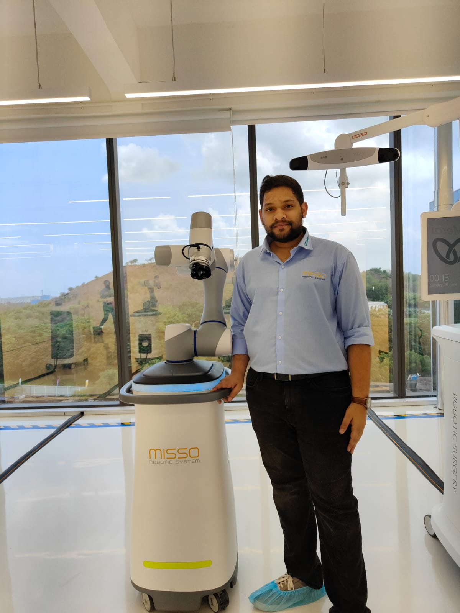

Sr. Embedded Software Engineer Meril Endosurgery, 2024
Chennai, India
Meril is a brand-name in the global medical device landscape, with its
research and development efforts benefiting the Indian Healthcare
sector spearheaded by the scale of its cardiovascular stents and
orthopaedic implants manufacturing capability. During my tenure at
Meril, I worked at the R&D Endosurgery & Robotics department.
MISSO Robot Assisted Laparoscopy
My primary role is contributing towards the embedded firmware design
and development for different sub-systems of the in-house RAS system
MISSO.
As part of my tasks, I am responsible for the end-to-end firmware
development and deployment of our In-House EtherCAT based motor driver
to control BLDC motors to actuate the instrument DOFs, as well as the
joints of our in-house 7DOF arm.
I also took ownership of sourcing and integration of high quality 7”
touchscreens to run our GUI. This involved optimising the linux based
operating system using a real-time kernel to run the software on a
performance constrained Intel Atom x6425 processor.
MISSO Robot Assisted Orthopaedics
As a collaborative effort, our team also contributed toward the design
and development of the MISSO Orthopaedic Surgical Robot.
My role was to scale the custom linux based operating system to 200+
systems by scripting the customisations.
Delegation to China for CMEF2024
I was selected as part of a small team of delegation from the company
to attend CMEF2024 in Shanghai, China in April 2024. During the
exhibition, I got hands on experience with 6 different Chinese
Surgical Robotics which included both single port and multi-port
robots.
As part of the delegation, we also visited 16 Robotics startups and
research Institutes. These included Mobile warehouse robots,
Humanoids, bionic hands, Quadrupeds and exoskeletons for
rehabilitation. I gained invaluable exposure to different branches in
robotics and a vast set of architectures. I experienced the
advancement of the field hands-on.
I also experienced the varied difference in the cultures of India and
China from food to communication.

EtherCAT based Motor Driver For BLDC Control →
Delegation to China →